上一章在顶点上做文章，这一章往下走一层，到像素。所有 UGUI 元素默认都用同一个 Shader——UI/Default。读懂它的每一行，就知道自定义 UI Shader 时哪些东西一个字都不能删；读懂 Mask 和 RectMask2D 的源码，就知道遮罩为什么会“失灵”、为什么一个贵一个便宜。最后用这些知识做几个项目里天天用得到的东西：新手引导挖洞、圆形头像、软遮罩、模糊背景。
Canvas 把子元素合批成若干个 Draw Call，每个 Draw Call 用一个材质。没有手动指定材质的 Graphic 用的是 Graphic.defaultGraphicMaterial，它的 Shader 就是 UI/Default。旧版 Text 用 UI/Default 的字体变体，TextMeshPro 则有自己的 SDF Shader（第 5 章）。
本章的底本是 Unity 2022.3.62f3 随编辑器发布的内置 Shader 源码（DefaultResourcesExtra/UI/UI-Default.shader 和 CGIncludes/UnityUI.cginc，可以在 Unity 官网的 Built-in Shaders 下载页获取）。不同 Unity 版本的 UI-Default 有过几次变化，比如混合模式从普通 Alpha 混合改成了预乘 Alpha、增加了 RectMask2D 的 Softness，所以自定义 UI Shader 一定要以你所用版本的内置源码为底本改写，不要从网上抄一份老版本。
// 摘自 DefaultResourcesExtra/UI/UI-Default.shader（Unity 2022.3.62f3）
Properties
{
[PerRendererData] _MainTex ("Sprite Texture", 2D) = "white" {}
_Color ("Tint", Color) = (1,1,1,1)
_StencilComp ("Stencil Comparison", Float) = 8
_Stencil ("Stencil ID", Float) = 0
_StencilOp ("Stencil Operation", Float) = 0
_StencilWriteMask ("Stencil Write Mask", Float) = 255
_StencilReadMask ("Stencil Read Mask", Float) = 255
_ColorMask ("Color Mask", Float) = 15
[Toggle(UNITY_UI_ALPHACLIP)] _UseUIAlphaClip ("Use Alpha Clip", Float) = 0
}
[PerRendererData] 表示它不是材质上的固定值，而是每个 CanvasRenderer 各自设置（canvasRenderer.SetTexture(mainTexture)）。所以一百个不同精灵的 Image 可以共用一个材质；同一图集里的精灵贴图相同，还能合批。
_Color材质级的整体色调，会乘到顶点色上。注意它和 Graphic.color 不是一回事：Graphic.color 写在顶点色里，每个元素不同；_Color 是材质的，所有用这个材质的元素都受影响。
_Stencil 等五个模板测试的参数。UI/Default 自己永远不改它们，它们是留给 Mask 组件的：Mask 通过 StencilMaterial.Add 复制一份材质，把这五个值改掉。14.6 节会读这段源码。默认值 Comp = 8（Always）、Op = 0（Keep）意味着“不参与模板”。
_ColorMask写哪些颜色通道，15 = RGBA 全写。Mask 的 Show Mask Graphic 关掉时，Mask 自身的材质副本会把它改成 0：只写模板、不写颜色。
_UseUIAlphaClip开关 UNITY_UI_ALPHACLIP 关键字。Mask 写模板时会打开它，让透明像素不写模板（后面详述）。
StencilMaterial.Add 在复制材质前会逐个检查 _Stencil、_StencilOp、_StencilComp、_StencilReadMask、_StencilWriteMask、_ColorMask 六个属性是否存在，缺任何一个就放弃，直接返回原材质——你的元素就不受 Mask 控制了。而且这个警告在批处理模式下不输出（源码里专门判断了 Application.isBatchMode），CI 打包时你根本看不到。（上面这段摘自本章的 Gray.shader，与 UI-Default 完全相同。）逐行看：
color.rgb *= color.a，输出的已经是“颜色 × 透明度”，混合时源颜色乘 1 即可。老版本用的是 Blend SrcAlpha OneMinusSrcAlpha，两种写法在普通情况下结果一样，但预乘对贴图边缘的过滤更正确（不会出现半透明边缘发黑或发白的“描边”），叠加多层半透明时也更稳定。// 摘自 UI-Default.shader（节选）
v2f vert(appdata_t v)
{
float4 vPosition = UnityObjectToClipPos(v.vertex);
OUT.worldPosition = v.vertex; // 注意：存的是 v.vertex，即“画布空间”坐标
OUT.vertex = vPosition;
float2 pixelSize = vPosition.w;
pixelSize /= float2(1, 1) * abs(mul((float2x2)UNITY_MATRIX_P, _ScreenParams.xy));
float4 clampedRect = clamp(_ClipRect, -2e10, 2e10);
OUT.texcoord = TRANSFORM_TEX(v.texcoord.xy, _MainTex);
OUT.mask = float4(v.vertex.xy * 2 - clampedRect.xy - clampedRect.zw,
0.25 / (0.25 * half2(_UIMaskSoftnessX, _UIMaskSoftnessY) + abs(pixelSize.xy)));
if (_UIVertexColorAlwaysGammaSpace) { if (!IsGammaSpace()) v.color.rgb = UIGammaToLinear(v.color.rgb); }
OUT.color = v.color * _Color;
return OUT;
}
几个关键点：
_ClipRect 也在这个空间，这就是它能直接和 worldPosition 比较的原因（变量名叫 world 其实有误导性）。本章的引导挖洞、软遮罩都利用了这一点。// 摘自 UI-Default.shader
fixed4 frag(v2f IN) : SV_Target
{
const half alphaPrecision = half(0xff);
const half invAlphaPrecision = half(1.0/alphaPrecision);
IN.color.a = round(IN.color.a * alphaPrecision)*invAlphaPrecision;
half4 color = IN.color * (tex2D(_MainTex, IN.texcoord) + _TextureSampleAdd);
#ifdef UNITY_UI_CLIP_RECT
half2 m = saturate((_ClipRect.zw - _ClipRect.xy - abs(IN.mask.xy)) * IN.mask.zw);
color.a *= m.x * m.y;
#endif
#ifdef UNITY_UI_ALPHACLIP
clip (color.a - 0.001);
#endif
color.rgb *= color.a;
return color;
}
_ClipRect.zw - _ClipRect.xy 是矩形宽高，abs(IN.mask.xy) 是像素到矩形中心距离的 2 倍，二者之差为正说明在矩形内，乘斜率再 saturate 就得到 0~1 的覆盖率。这个关键字由 CanvasRenderer 在元素进入 RectMask2D 时自动开启，所以 Shader 里用 multi_compile_local 声明两个变体。以 UI-Default 为底本改写时，下面这些必须原样保留：① Properties 里的 _Stencil 等五个属性和 _ColorMask；② SubShader 里的 Stencil 块、ColorMask、ZTest [unity_GUIZTestMode]、Cull Off、ZWrite Off；③ multi_compile_local _ UNITY_UI_CLIP_RECT 和 _ UNITY_UI_ALPHACLIP 两行及对应的代码块，以及计算 OUT.mask 需要的 _ClipRect、_UIMaskSoftnessX/Y；④ 顶点色乘法与 _TextureSampleAdd；⑤ 预乘混合与 color.rgb *= color.a 要么都留、要么一起改。你的效果代码只应该改“采样并计算 color”这一段。不要用 UsePass "UI/Default/DEFAULT" 偷懒——那样你什么也改不了。
本章所有效果 Shader 都由同一个模板生成，结构与 UI-Default 一一对应，只多了两样东西：一个 _UseVertexParam 开关和一个 luv（局部坐标）插值量，14.4 节解释。下面是灰度 Shader 的完整源码，后面的效果只展示各自不同的片段。
灰度值用加权平均（0.299, 0.587, 0.114），这组权重来自电视信号的亮度公式，反映人眼对绿色最敏感、对蓝色最不敏感。直接取 (r+g+b)/3 的话，蓝色图标会显得过亮。_Brightness 让灰掉的图标稍微暗一点，更像“不可用”。主参数（灰度程度）在模板里叫 IN.param，0 是原色、1 是全灰。
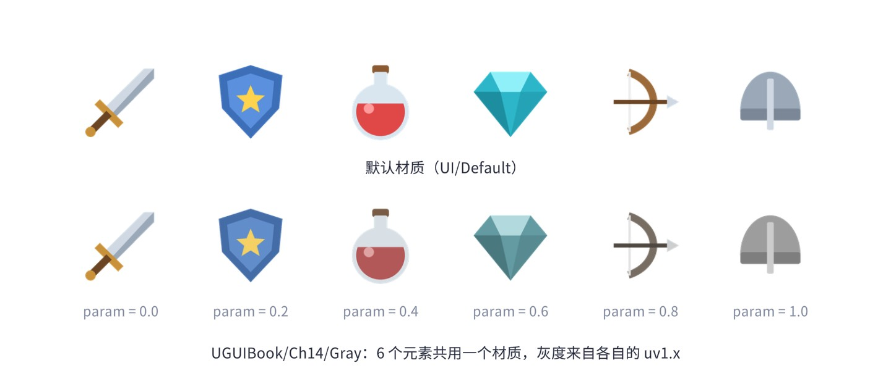
禁用态按钮常见的做法是 Selectable 切到 Disabled 状态时，把按钮和图标的材质换成 Gray。注意换材质会让这些元素与其他元素分到不同批次；如果禁用态元素很多，可以像图 14-1 一样全部使用 Gray 材质，用参数控制灰度，正常态参数为 0——所有元素始终同一材质，批次不会被打断。
把二维坐标投影到倾斜方向上：x′ = u + v·tan(角度)，同一条倾斜直线上的点 x′ 相同。高光带中心随 progress 从左端外侧扫到右端外侧，像素离带中心的距离除以带宽，再用 smoothstep 做柔和边缘。高光是“加”到颜色上的，alpha 不变，所以按钮透明的圆角外面不会出现光。
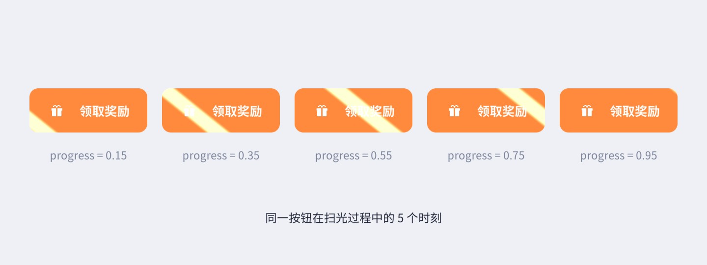
每个像素从噪声图取一个 0~1 的值，阈值随 progress 增长，噪声低于阈值的像素被丢弃（alpha = 0），刚好在阈值附近一窄条的像素染成发光色，看起来像燃烧的边缘。阈值的范围特意设计成从 −edge 到 1，保证 progress = 0 时一个像素都不烧、也看不到发光边，progress = 1 时全部烧光。
配套的 noise 精灵实际取值大约在 0.15~0.7 之间（作者用 Python 统计过它的直方图），直接用的话前 15% 的进度什么也不发生、过了 70% 就已全部消失，所以 Shader 多了一个 _NoiseRange 把噪声拉伸到 0~1。另外这张噪声图不是无缝贴图，平铺（Tiling > 1）会出现明显的直线接缝，第一次拍图时作者就踩了这个坑。
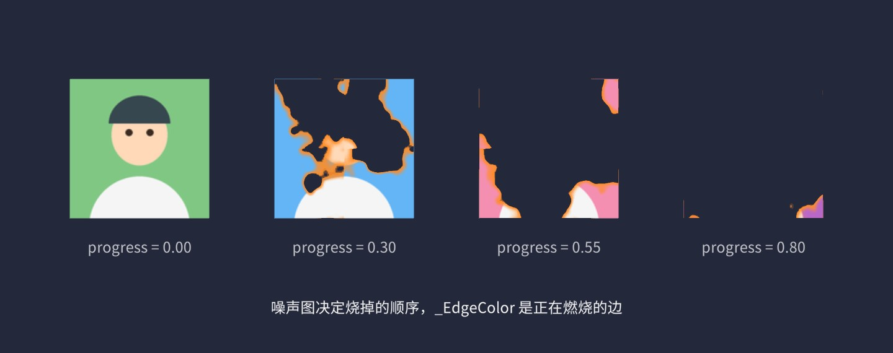
扭曲类效果的共同点是不改颜色、改采样位置：先算出一个 uv 偏移，再用偏移后的 uv 去采样贴图。水波是以 _Center 为圆心的一圈环形波：环的半径随 progress 变大，环附近的像素沿径向偏移 sin(距离 × 频率) × 振幅，用高斯函数限制在环附近，强度随 progress 衰减。乘上宽高比 _Aspect 是为了让波纹在非正方形元素上也是正圆。旗帜飘动则是 y 方向的正弦偏移，振幅随 x 线性增大，左边像固定在旗杆上。
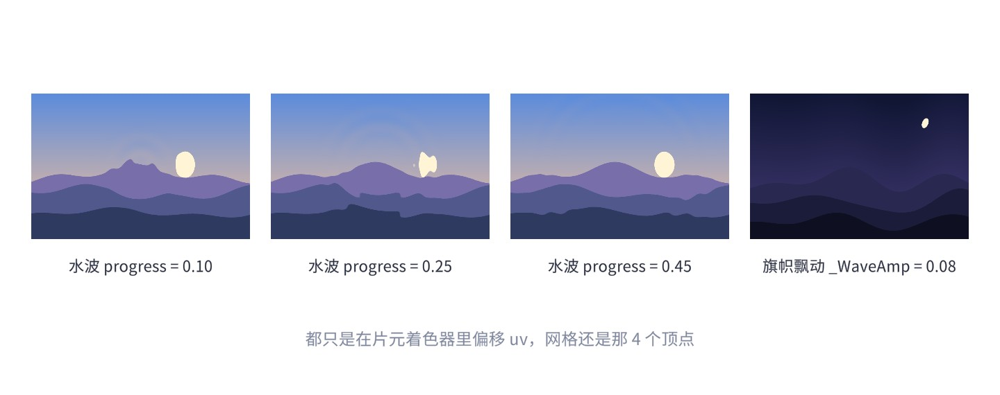
扭曲效果会采样到 0~1 范围之外，贴图的 Wrap Mode 为 Clamp 时边缘会被拉伸，图 14-4 的旗帜右边缘就能看到。要避免的话，可以让元素比可见区域稍大、外面套一个 RectMask2D，或者在 Shader 里把超出范围的像素 alpha 置 0。
把颜色转到 HSV 空间，色相加一个偏移、饱和度和明度乘系数，再转回 RGB。转换函数是 GPU 上常用的无分支写法，用 lerp/step 代替 if，避免分支发散。
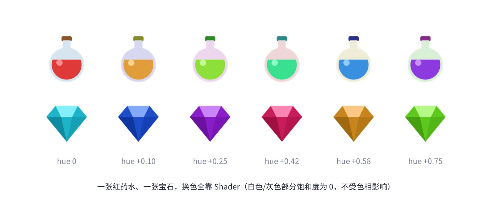
这正是 HSV 调色相比“乘一个颜色”的优势：乘色会把高光的白色也染掉，而 HSV 只转动有颜色的部分。药水瓶的玻璃、宝石的高光都保持原样。游戏里同一件装备的不同品质、同一个怪物的不同变种，都可以用一张图 + HSV 参数实现。
效果 Shader 的参数（灰度程度、流光进度）怎么传给每个元素？最直接的办法是材质属性：image.material.SetFloat("_Progress", p)。问题是 Graphic.material 的 getter 不会复制材质，所有用这个材质的元素会一起变；要各自不同，就得给每个元素 new 一个材质实例，而材质不同的元素无法合批——十个各自扫光的按钮就是十个 Draw Call。
另一条路是把参数放进顶点数据。上一章说过，UIVertex 除了 uv0 还有 uv1~uv3 三个通道，平时空着。我们写一个 BaseMeshEffect，把参数写进每个顶点的 uv1.x，顺手把顶点在元素矩形内的局部坐标写进 uv1.zw：
Shader 这边，模板里的顶点着色器统一做了这件事：
// 本章 Shader 模板的顶点着色器（节选）：主参数与局部坐标 OUT.param = lerp(_Progress, v.texcoord1.x, _UseVertexParam); // 0：用材质属性；1：用顶点 uv1.x OUT.luv = lerp(v.texcoord.xy, v.texcoord1.zw, _UseVertexParam);
用 lerp 代替 if/关键字，不会多编译出变体。_UseVertexParam 打开后，材质上的 _Progress 就不再起作用，参数完全由每个元素的 UIParamEffect 决定。代价与收益对比如下：
| 传参方式 | 改参数时的开销 | 合批 | 适用 |
|---|---|---|---|
| 共享材质属性 | 只改一个数，无重建 | 能合批，但所有元素同一个值 | 全局统一的效果（整体变灰、全屏扭曲） |
| 每个元素一个材质实例 | 只改一个数，无重建 | 不能合批，每个元素一个 Draw Call | 屏幕上只有一两个的元素（全屏转场、旗帜） |
| 顶点通道（uv1） | 该元素重建网格（一个 Image 只有 4~16 个顶点） | 能合批，每个元素值不同 | 大量同类元素各自变化（列表里的图标、成排按钮） |
使用顶点通道有一个前提：Canvas 的 要勾选 TexCoord1，否则 uv1 根本不会送进 Shader。UIParamEffect 在 OnEnable 时自动帮你打开。TextMeshPro 自己会打开 TexCoord1、Normal、Tangent 三个通道（它用 uv1 存 SDF 参数），所以 TMP 文字不能用这个方法——TMP 的 uv1 有别的用途。
配套场景 Ch14_ShaderGallery 里，所有效果都由一个 ParamDriver 组件驱动 UIParamEffect.value 动起来；旗帜则相反，用的是材质实例（FlagWave 组件），可以在 Frame Debugger 里对比两者的批次。最下面一排图标放在带 Softness 的 RectMask2D 里来回平移，证明这些 Shader 都兼容裁剪。
UGUI 有两种遮罩组件，第 9 章的 ScrollRect 已经用过。先做一个对照实验：两种遮罩各放两张图，左上那张用本章的 Gray 材质（保留了全部遮罩相关代码），右下那张用一个故意写坏的 Shader BadNoStencil——它能正常显示贴图和顶点色，但删掉了 Stencil 块和 CLIP_RECT 分支。
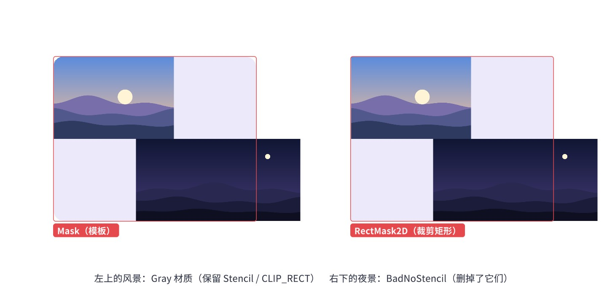
两种遮罩的失效方式不同，正好对应它们不同的原理：Mask 依赖模板测试，Shader 没有 Stencil 块就完全不受控制；RectMask2D 依赖 Shader 里的 CLIP_RECT 代码做逐像素裁剪，Shader 没有这段代码就不裁剪——但 RectMask2D 还有一层 CPU 端的剔除，完全在矩形外的元素会被整个跳过绘制，所以坏 Shader 在 RectMask2D 下“只漏一部分”。下面分别读源码。
模板缓冲（Stencil Buffer）是和颜色缓冲一样大的一块显存，每个像素 8 位。绘制时，每个像素可以先做一次模板测试：拿材质指定的参考值 Ref 与缓冲里的值比较（比较前两边都先与 ReadMask 按位与），比较通过才画这个像素；画的同时还可以按 Pass 指定的操作（Keep 保持、Replace 替换为 Ref、Zero 清零……）修改缓冲里的值，修改时只改 WriteMask 允许的位。
Mask 的思路很直接：先把遮罩图形画一遍，在它覆盖的像素上把模板值写成 1；再画子元素，只允许模板值等于 1 的像素通过；子元素画完，再把遮罩图形画一遍，把模板值清回 0，免得影响后面的元素。
Mask 实现了 IMaterialModifier，在自身 Graphic 生成材质时介入：
// 摘自 com.unity.ugui 1.0.0 Runtime/UI/Core/Mask.cs（节选）
public virtual Material GetModifiedMaterial(Material baseMaterial)
{
if (!MaskEnabled()) return baseMaterial;
var rootSortCanvas = MaskUtilities.FindRootSortOverrideCanvas(transform);
var stencilDepth = MaskUtilities.GetStencilDepth(transform, rootSortCanvas);
if (stencilDepth >= 8) { Debug.LogWarning("Attempting to use a stencil mask with depth > 8", gameObject); return baseMaterial; }
int desiredStencilBit = 1 << stencilDepth;
if (desiredStencilBit == 1) // 第一层：直接写 1，弹出时清 0
{
var maskMaterial = StencilMaterial.Add(baseMaterial, 1, StencilOp.Replace, CompareFunction.Always, m_ShowMaskGraphic ? ColorWriteMask.All : 0);
...
var unmaskMaterial = StencilMaterial.Add(baseMaterial, 1, StencilOp.Zero, CompareFunction.Always, 0);
...
graphic.canvasRenderer.popMaterialCount = 1;
graphic.canvasRenderer.SetPopMaterial(m_UnmaskMaterial, 0);
return m_MaskMaterial;
}
// 嵌套的第 N 层：只在上一层通过的区域里，把第 N 位也置 1
var maskMaterial2 = StencilMaterial.Add(baseMaterial, desiredStencilBit | (desiredStencilBit - 1), StencilOp.Replace, CompareFunction.Equal,
m_ShowMaskGraphic ? ColorWriteMask.All : 0, desiredStencilBit - 1, desiredStencilBit | (desiredStencilBit - 1));
...
var unmaskMaterial2 = StencilMaterial.Add(baseMaterial, desiredStencilBit - 1, StencilOp.Replace, CompareFunction.Equal, 0,
desiredStencilBit - 1, desiredStencilBit | (desiredStencilBit - 1));
...
}
要点：GetStencilDepth 数的是这个物体的父级链上有几个启用的 Mask（遇到 Override Sorting 的 Canvas 就停）。第 d 层 Mask 负责模板值的第 d 位，所以嵌套最多 8 层（8 位）。“弹出材质”（Pop Material）挂在 CanvasRenderer 上，原生层会在这个 Mask 的所有子元素画完之后，用它再画一次 Mask 图形，恢复模板值。
子元素这边，MaskableGraphic 同样实现了 IMaterialModifier：
// 摘自 MaskableGraphic.cs（节选）
if (m_StencilValue > 0 && !isMaskingGraphic)
{
var maskMat = StencilMaterial.Add(toUse, (1 << m_StencilValue) - 1, StencilOp.Keep, CompareFunction.Equal,
ColorWriteMask.All, (1 << m_StencilValue) - 1, 0);
...
}
处在 d 层 Mask 里的元素，要求模板值的低 d 位全部为 1（Ref = 2ᵈ − 1，ReadMask = 2ᵈ − 1，Comp = Equal），并且不改模板（WriteMask = 0）。也就是说必须同时位于所有外层 Mask 之内才画得出来——嵌套 Mask 取的是交集。
理论讲完，直接读取 UGUI 运行时生成的材质来验证。下面的配图里有三层嵌套的 Mask（圆角矩形 ⊃ 圆 ⊃ 星形），右侧文字是截图前用代码读出的每个元素 materialForRendering 的模板属性，以及每个 Mask 的弹出材质（通过反射读 Mask 的私有字段 m_UnmaskMaterial）：
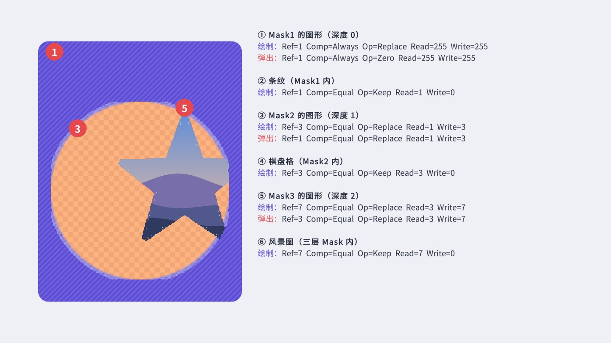
对照着读：① 第一层 Mask 在任何地方都把模板写成 1；② 第一层里的条纹要求模板值的最低位等于 1；③ 第二层 Mask 只在模板值最低位为 1（Read = 1）的地方画，并把值替换成 3（二进制 11）；它的弹出材质在同样的区域把值改回 1；④ 第二层里的棋盘格要求低两位都是 1；⑤⑥ 依此类推。和源码逐一吻合。
Canvas 合批的基本规则是：相邻（按绘制顺序）且材质、贴图相同的元素可以合成一个批次。Mask 的三步绘制在绘制序列里插入了三段使用不同材质的内容：Mask 图形自己（写模板的材质）、所有子元素（带模板测试的材质副本）、弹出（清模板的材质）。子元素的材质副本与 Mask 外面元素的原始材质不同，即使它们用的是同一张图集，也无法合到一起；Mask 内部的子元素之间则可以正常合批。所以在一个滚动列表里，如果每一项都有自己的圆角 Mask，就意味着每一项至少三个批次，五十项就是一百五十个——这是很多项目 Draw Call 爆炸的根源。
此外，Mask 不做剔除：被遮住、完全看不见的子元素依然会提交绘制，只是在模板测试时被逐像素丢弃。对于内容远大于可视区域的滚动列表，这意味着屏幕外的项也在消耗顶点处理和填充率，这又是一个“矩形区域优先用 RectMask2D”的理由。
每个 Mask、每个被遮罩的元素都要一个改过模板参数的材质，UGUI 不会每次都 new。StencilMaterial 维护一个列表，以“原材质 + 六个模板参数”为键：
// 摘自 StencilMaterial.cs（节选）
for (int i = 0; i < listCount; ++i)
{
MatEntry ent = m_List[i];
if (ent.baseMat == baseMat && ent.stencilId == stencilID && ent.operation == operation
&& ent.compareFunction == compareFunction && ent.readMask == readMask
&& ent.writeMask == writeMask && ent.colorMask == colorWriteMask)
{
++ent.count;
return ent.customMat;
}
}
var newEnt = new MatEntry();
newEnt.customMat = new Material(baseMat);
newEnt.customMat.hideFlags = HideFlags.HideAndDontSave;
...
newEnt.useAlphaClip = operation != StencilOp.Keep && writeMask > 0;
...
if (newEnt.useAlphaClip) newEnt.customMat.EnableKeyword("UNITY_UI_ALPHACLIP");
所以同一层 Mask 下、原材质相同的子元素拿到的是同一个材质副本，它们之间仍然可以合批。最后一行解释了 ALPHACLIP 的用途：凡是要写模板的材质（Mask 自身）都打开 alpha 裁剪，透明像素被 clip 掉、不写模板，Mask 的形状才是精灵的形状而不是矩形。
这也带来 Mask 最大的视觉缺陷：模板只有“写”和“不写”两种状态。alpha 大于 0.001 的像素全部算在遮罩内，精灵边缘的半透明抗锯齿像素被当成“完全在内”，遮罩边缘必然是硬边、带锯齿，而且比精灵看起来的轮廓略大。14.9 节的放大实拍可以看得很清楚。
RectMask2D 走的是完全不同的路，不碰模板缓冲。它实现了 IClipper，在每帧布局完成之后、图形重建之前被调用（第 12 章 PerformUpdate 中的 ClipperRegistry.instance.Cull()）：
// 摘自 com.unity.ugui 1.0.0 Runtime/UI/Core/RectMask2D.cs（节选）
public virtual void PerformClipping()
{
if (m_ShouldRecalculateClipRects)
{
MaskUtilities.GetRectMasksForClip(this, m_Clippers); // 收集父级链上所有 RectMask2D
m_ShouldRecalculateClipRects = false;
}
bool validRect = true;
Rect clipRect = Clipping.FindCullAndClipWorldRect(m_Clippers, out validRect);
...
if (clipRect != m_LastClipRectCanvasSpace)
{
foreach (MaskableGraphic maskableTarget in m_MaskableTargets)
{
maskableTarget.SetClipRect(clipRect, validRect); // → canvasRenderer.EnableRectClipping
maskableTarget.Cull(clipRect, validRect); // 完全在矩形外 → canvasRenderer.cull = true
}
}
...
UpdateClipSoftness();
}
// 摘自 Clipping.cs：嵌套的 RectMask2D 取交集
Rect current = rectMaskParents[0].canvasRect;
...
for (var i = 1; i < rectMaskParentsCount; ++i)
{
current = rectMaskParents[i].canvasRect;
if (xMin < current.xMin + offset.x) xMin = current.xMin + offset.x;
...
}
validRect = xMax > xMin && yMax > yMin;
整个流程是：把自己和所有父级 RectMask2D 的矩形（转换到根 Canvas 空间、减去 padding）求交集，得到一个裁剪矩形；对每个子元素，如果它的矩形和裁剪矩形完全不重叠，就设置 canvasRenderer.cull = true，这个元素根本不会提交绘制；否则通过 EnableRectClipping 把矩形交给 CanvasRenderer，原生层为它打开 UNITY_UI_CLIP_RECT 关键字、设置 _ClipRect，由 Shader 逐像素裁掉矩形外的部分。Softness 同理，通过 clippingSoftness 传给 Shader 的 _UIMaskSoftnessX/Y。
由此也能推出 RectMask2D 的限制：裁剪区域只能是一个矩形；这个矩形是在根 Canvas 空间里轴对齐计算的，RectMask2D 旋转后裁剪区域不会跟着旋转（源码注释也写明它“只在 2D 平面工作”）；它的子元素要和它在同一平面上。另外，每个元素的 _ClipRect 不同就意味着材质参数不同，不同 RectMask2D 下的元素之间不能合批；同一个 RectMask2D 下的元素则共用一个裁剪矩形，可以合批。
| Mask | RectMask2D | |
|---|---|---|
| 形状 | 任意（由精灵 alpha 决定） | 只能是轴对齐矩形 |
| 边缘 | 硬边，有锯齿 | 抗锯齿，可设 Softness 软边 |
| 额外 Draw Call | 每个 Mask 至少 +2（写模板、清模板） | 0 |
| 合批 | Mask 内外的元素不能互相合批 | 同一 RectMask2D 下可合批，不同 RectMask2D 之间不行 |
| 剔除 | 不剔除，遮罩外的元素照样提交绘制、被模板丢弃 | 完全在外的子元素直接 cull，不绘制 |
| CPU 开销 | 材质修改，状态变化时才计算 | 每帧对子元素做矩形判断（元素很多时可观） |
| 嵌套 | 最多 8 层 | 不限，取交集 |
| 旋转 | 支持 | 不支持（裁剪矩形不旋转） |
| 对 Shader 的要求 | Stencil 属性块 + ALPHACLIP | UNITY_UI_CLIP_RECT 分支 |
结论很简单：矩形区域一律用 RectMask2D（滚动列表、裁剪面板），只有非矩形的形状才用 Mask，而且这时也要先想想有没有不需要遮罩的做法——下面的圆形头像案例就是一个例子。配套工程里 UIKit.ScrollView() 创建滚动视图后，会把 Viewport 默认的 Mask + Image 换成 RectMask2D，原因就在这张表里。
目标：引导玩家依次点击指定按钮。全屏压暗，只在目标按钮处“挖”一个圆角矩形的洞；洞内可以正常点击目标按钮，洞外的点击全部被挡住。切换目标时，洞从全屏收缩到新目标。
很多项目用“反向 Mask”做挖洞：先用模板标出洞的区域，遮罩层只在洞外画。这需要额外的模板 Draw Call，洞的边缘也是硬的。更简单的办法是让遮罩层自己的 Shader 算出洞：遮罩层是一张全屏 Image，Shader 里用圆角矩形的有向距离函数（SDF）判断每个像素在洞内还是洞外，洞内 alpha 为 0、边缘羽化。洞的位置用画布空间坐标传入——前面说过，Shader 里的 worldPosition 就是画布空间坐标，和 RectMask2D 的做法一致。
圆角矩形 SDF 的含义：q 是“点到矩形中心的距离减去（半尺寸 − 半径）”，在角落区域退化成到圆角圆心的距离减半径，在边上退化成到边的距离。返回值在洞内为负、洞外为正、边界上为 0，smoothstep(0, feather, d) 就得到从洞边缘开始、宽度为 feather 的过渡。
洞的参数怎么送进材质？如果直接改 image.material 上的属性，会改到共享的材质资源。这里模仿 Mask 组件的做法，实现 IMaterialModifier：Graphic 每次生成渲染材质时，都会把材质交给同物体上所有 IMaterialModifier 依次加工，我们返回一个带洞参数的材质副本。
注意 CopyPropertiesFromMaterial(baseMaterial)：传进来的 baseMaterial 可能已经被 MaskableGraphic 改过模板参数（引导层放在某个 Mask 里时），先拷贝再设置洞参数，模板参数才不会丢。洞的位置计算与 RectMask2D 相同，把目标的四个角变换到根 Canvas 的本地空间：
动画起点是“以目标为中心、刚好盖住整个画布的大洞”，progress 从 0 到 1 时洞收缩到目标大小。点击穿透只需实现 ICanvasRaycastFilter：落在目标矩形内的点返回 false，表示“这一点不归我”，GraphicRaycaster 就会继续把它交给下面的目标按钮；其他位置返回 true，遮罩层（Raycast Target 开着）吃掉点击。
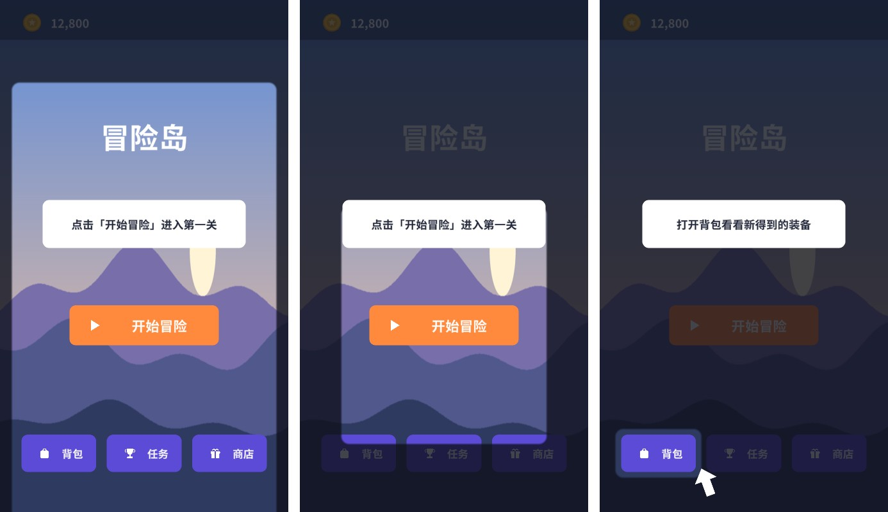
运行场景：只有洞里的按钮能点，点了之后引导自动移到下一个按钮，三步完成后遮罩消失、所有按钮恢复可点。控制脚本 GuideDemo 在循环里给按钮加监听时，先把循环变量拷贝到局部变量再在闭包里使用——第 6 章讲过的闭包陷阱在这里同样存在。
_HoleRadius 设为半边长即可得到圆洞。② 多个洞（同时高亮两个控件）可以把 _HoleRect 换成数组、Shader 里取多个 SDF 的最小值。③ 引导系统通常还要处理“目标在滚动列表里”的情况：先滚动到目标（第 9 章），等布局稳定后再 SetTarget；GuideMask 的 Update 里检查 target.hasChanged，目标被布局移动后洞会自动跟上。目标：把方形头像显示成圆形。这是 UI 里最常见的需求之一，也是最容易用错 Mask 的地方。
下面用与第 13 章相同的“低分辨率实拍放大”对比前两种方法：头像以 30×30 像素渲染到 48×36 的 RenderTexture（关闭 MSAA），再点采样放大。
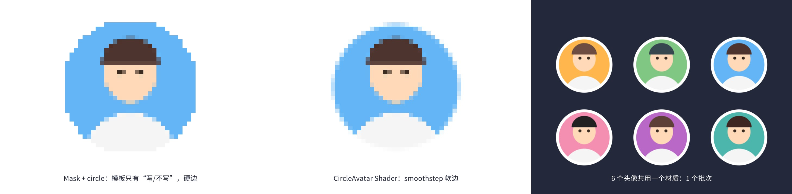
Shader 方案要求头像精灵的 uv 是完整的 0~1（单独的贴图，或 Full Rect 的精灵）。头像打进图集时，uv 只是图集中的一小块，圆心就不在 (0.5, 0.5) 了——这时可以像 14.4 节一样，用 UIParamEffect 把局部坐标写进 uv1，Shader 改用 IN.luv 计算距离。实际项目中，网络头像一般是运行时下载的单独贴图，通常直接满足条件。
目标：遮罩边缘是任意柔和的渐变——Mask 只能硬边，RectMask2D 只能矩形。典型用途：圆形小地图的边缘淡出、技能图标的光晕形裁切、聚光灯效果。
把遮罩形状做成一张贴图，用它的 alpha 乘到被遮元素的 alpha 上。被遮元素的 Shader 需要知道“当前像素对应遮罩贴图的哪个位置”：遮罩矩形在画布空间中的位置传进来，像素的画布空间坐标减去矩形左下角、除以矩形尺寸，就得到 0~1 的遮罩 uv。
组件分两部分：父节点上的 SoftMask 持有遮罩贴图和一个共享的材质实例，在遮罩移动时更新矩形参数；子元素上的 SoftMaskable 通过 IMaterialModifier 把自己的材质换成这个共享实例。同一个软遮罩下的所有元素共用一个材质，仍然可以合批。
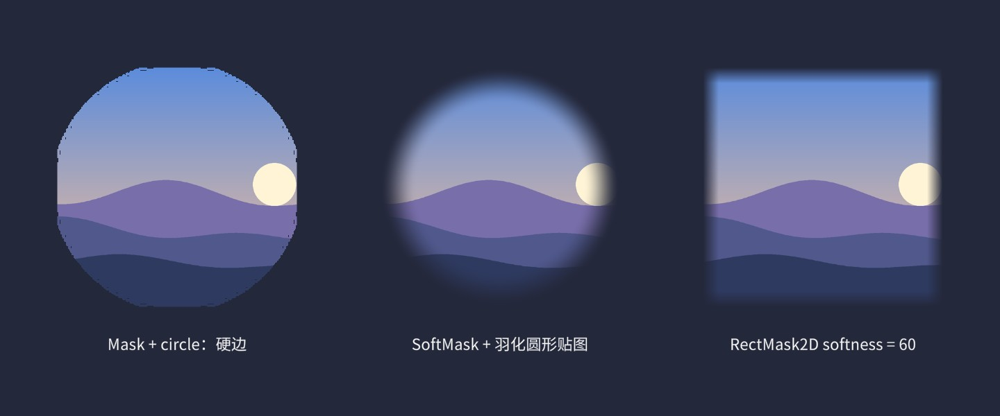
仔细看图 14-12 左边的 Mask：圆的上下左右四处被“削平”了。这不是 bug：circle 精灵的边缘有一圈抗锯齿的半透明像素，Mask 的 alpha 裁剪阈值是 0.001，只要有一点点 alpha 就写模板；精灵被放大 3 倍多显示时，靠近贴图边缘那几排低 alpha 像素被双线性插值放大成了一条“平边”。这正是 Mask 边缘质量差的另一个表现。
目标：打开弹窗时，背后的界面变成毛玻璃般的模糊。
实时模糊（每帧抓取屏幕再模糊）在移动端很贵：每帧多一次全屏渲染 + 多次全屏后处理。而绝大多数弹窗打开期间，背后的界面并不需要动。所以项目里普遍采用快照方案：只在打开弹窗的那一刻把画面渲染到一张降采样的 RenderTexture，做几次模糊，交给 RawImage 显示；之后每帧的开销只是画一张贴图。
降采样本身就很关键：把 1920×1080 缩到 1/4 是 480×270，像素数只有 1/16，后续每次模糊的开销也降到 1/16；而且缩小再放大本身就是一次低通滤波，模糊半径等效放大了 4 倍。模糊用可分离的高斯：一次横向、一次纵向，9 个采样点的两遍等价于 9×9 的二维高斯，却只要 18 次采样。
流程：先临时隐藏弹窗自己，让相机渲染一帧到全分辨率临时 RT；Blit 到 1/4 大小的 RT；在两张小 RT 之间来回做 N 次“横 + 竖”模糊，每次迭代把采样间距放大一点，让模糊范围增长更快；最后拷到组件自己持有的 RT 交给 RawImage。临时 RT 用 GetTemporary 获取、用完立刻 ReleaseTemporary，结果 RT 则必须自己持有——临时 RT 释放后可能被别处复用，内容随时被覆盖。
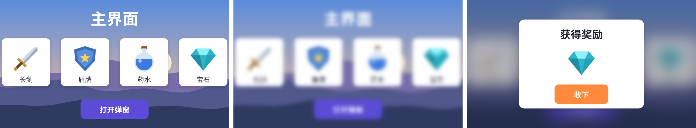
ScreenCapture.CaptureScreenshotIntoRenderTexture：在协程里 yield return new WaitForEndOfFrame() 之后调用，把整个屏幕（含 Overlay UI）抓进 RT，再走同样的降采样和模糊流程。模糊算法本身也有很多选择。本章用的可分离高斯实现简单、效果稳定；移动端追求更大模糊半径时，常用 Kawase 模糊或 Dual Kawase（降采样金字塔逐级缩小再逐级放大），在相同开销下能得到更大的模糊范围。无论用哪种，“只在打开时算一次”的快照思路都比算法本身更能省电。
调参建议：降采样 4 倍、迭代 2~4 次对大多数弹窗足够；模糊后叠一层 20%~40% 的深色，弹窗内容的可读性会好很多。快照拍完后，如果背后的界面数据变了（比如倒计时），模糊图不会更新——通常没人会注意到，但如果背后有明显的动画，就要权衡是否值得实时模糊。
理解了两种遮罩的原理，很多“遮罩不好使”的问题都能直接从源码推出原因：
MaskUtilities.GetStencilDepth 向上数 Mask 时，遇到 Override Sorting 的 Canvas 就停止，外层的 Mask 不再被计入，这个子 Canvas 里的元素也就不做模板测试。RectMask2D 同样受子 Canvas 影响。需要在遮罩里放独立排序的内容时，要重新设计层级。
RectMask2D 下的元素突然整个消失元素的 RectTransform 矩形完全落在裁剪区外（哪怕它的网格或子物体还在里面），就会被 cull。常见于“尺寸为 0 的容器节点上挂了 Graphic”，或者自定义 Graphic 把网格画在了矩形外。
RectMask2D 旋转后裁剪不对裁剪矩形是在根 Canvas 空间里轴对齐计算的，不随 RectMask2D 旋转。需要旋转的裁剪区域只能用 Mask 或自定义 Shader。
Mask 里的粒子 / 3D 模型不被裁剪粒子系统、MeshRenderer 不是 Graphic，不会经过 MaskableGraphic 的材质修改，自然不受 Mask 控制。要让它们被 UI 遮罩裁剪，需要给它们的 Shader 加上相同的 Stencil 测试（Ref 与 Mask 层级对应），或者用 RenderTexture 把它们先渲染成图片再放进 RawImage（第 19 章）。
TMP 文字在 Mask 下正常，在自定义软遮罩下变成方块TMP 的 SDF Shader 自己带了 Stencil 和 CLIP_RECT 支持，所以两种内置遮罩都能用；但任何替换材质的自定义方案都必须为 TMP 单独准备 SDF 版本的 Shader（见案例 14.3 的说明）。
Mask 嵌套很深后部分元素不显示超过 8 层时 Mask 输出警告并放弃写模板。实际项目中 3 层以上的 Mask 嵌套通常意味着层级设计有问题，例如滚动列表的每一项又各自带圆角 Mask——这种情况应该改用圆角精灵或本书第 13 章的 RoundedRect。
排查遮罩问题时，Frame Debugger 是最直接的工具：选中某个 Draw Call，右侧会列出它使用的材质名称。StencilMaterial 生成的材质名形如 “Stencil Id:1, Op:Keep, Comp:Equal, …”，与图 14-8 读出的参数一一对应，一眼就能看出某个元素是否被套上了模板测试、处在第几层。
shader_feature_local，未用到的变体在打包时会被剔除。Shader.Find 引用的 Shader 不会自动打进包里，运行时会找不到（材质变粉）。本章组件都通过序列化的材质资源引用 Shader，不用 Shader.Find；如果一定要 Find，把 Shader 加入 。#pragma target 2.0。本章模板多用了两个插值量（param、luv），在 target 2.0 的插值器数量限制之内；继续往 v2f 里加东西时要留意，或提高 target。